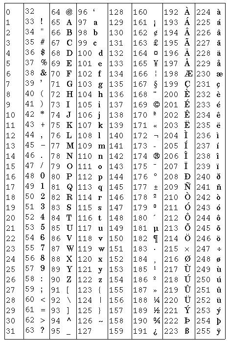

Author: Dave Raggett <dsr@w3.org>
This document has been reviewed by W3C members and other interested parties and has been endorsed by the Director as a W3C Recommendation. It is a stable document and may be used as reference material or cited as a normative reference from another document. W3C's role in making the Recommendation is to draw attention to the specification and to promote its widespread deployment. This enhances the functionality and interoperability of the Web.
A list of current W3C Recommendations and other technical documents can be found at http://www.w3.org/pub/WWW/TR/.
The HyperText Markup Language (HTML) is a simple markup language used to create hypertext documents that are portable from one platform to another. HTML documents are SGML documents with generic semantics that are appropriate for representing information from a wide range of applications. This specification defines HTML version 3.2. HTML 3.2 aims to capture recommended practice as of early '96 and as such to be used as a replacement for HTML 2.0 (RFC 1866).
HTML 3.2 is W3C's specification for HTML, developed in early `96 together with vendors including IBM, Microsoft, Netscape Communications Corporation, Novell, SoftQuad, Spyglass, and Sun Microsystems. HTML 3.2 adds widely deployed features such as tables, applets and text flow around images, while providing full backwards compatibility with the existing standard HTML 2.0.
W3C is continuing to work with vendors on extensions for accessibility features, multimedia objects, scripting, style sheets, layout, forms, math and internationalization. W3C plans on incorporating this work in further versions of HTML.
HTML 3.2 is an SGML application conforming to International Standard ISO 8879 -- Standard Generalized Markup Language. As an SGML application, the syntax of conforming HTML 3.2 documents is defined by the combination of the SGML declaration and the document type definition (DTD). This specification defines the intended interpretation of HTML 3.2 elements, and places further constraints on the permitted syntax which are otherwise inexpressible in the DTD.
The SGML rules for record boundaries are tricky. In particular, a record end immediately following a start tag should be discarded. For example:
<P> Text
is equivalent to:
<P>Text
Similarly, a record end immediately preceding an end tag should be discarded. For example:
Text </P>
is equivalent to:
Text</P>
Except within literal text (e.g. the PRE element), HTML treats contiguous sequences of white space characters as being equivalent to a single space character (ASCII decimal 32). These rules allow authors considerable flexibility when editing the marked-up text directly. Note that future revisions to HTML may allow for the interpretation of the horizontal tab character (ASCII decimal 9) with respect to a tab rule defined by an associated style sheet.
SGML entities in PCDATA content or in CDATA attributes are expanded by the parser, e.g. é is expanded to the ISO Latin-1 character decimal 233 (a lower case letter e with an acute accent). This could also have been written as a named character entity, e.g. é. The & character can be included in its own right using the named character entity &.
HTML allows CDATA attributes to be unquoted provided the attribute value contains only letters (a to z and A to Z), digits (0 to 9), hyphens (ASCII decimal 45) or, periods (ASCII decimal 46). Attribute values can be quoted using double or single quote marks (ASCII decimal 34 and 39 respectively). Single quote marks can be included within the attribute value when the value is delimited by double quote marks, and vice versa.
Note that some user agents require attribute minimisation for the following attributes: COMPACT, ISMAP, CHECKED, NOWRAP, NOSHADE and NOHREF. These user agents don't accept syntax such as COMPACT=COMPACT or ISMAP=ISMAP although this is legitimate according to the HTML 3.2 DTD.
The SGML declaration and the DTD for use with HTML 3.2 are given in appendices. Further guidelines for parsing HTML are given in WD-html-lex.
HTML 3.2 Documents start with a <!DOCTYPE> declaration followed by an HTML element containing a HEAD and then a BODY element:
<!DOCTYPE HTML PUBLIC "-//W3C//DTD HTML 3.2 Final//EN"> <HTML> <HEAD> <TITLE>A study of population dynamics</TITLE> ... other head elements </HEAD> <BODY> ... document body </BODY> </HTML>
In practice, the HTML, HEAD and BODY start and end tags can be omitted from the markup as these can be inferred in all cases by parsers conforming to the HTML 3.2 DTD.
Every conforming HTML 3.2 document must start with the <!DOCTYPE> declaration that is needed to distinguish HTML 3.2 documents from other versions of HTML. The HTML specification is not concerned with storage entities. As a result, it is not required that the document type declaration reside in the same storage entity (i.e. file). A Web site may choose to dynamically prepend HTML files with the document type declaration if it is known that all such HTML files conform to the HTML 3.2 specification.
Every HTML 3.2 document must also include the descriptive title element. A minimal HTML 3.2 document thus looks like:
<!DOCTYPE HTML PUBLIC "-//W3C//DTD HTML 3.2 Final//EN"> <TITLE>A study of population dynamics</TITLE>
Note: the word "Final" replaces "Draft" now that the HTML 3.2 specification has been ratified by the W3C member organizations.
This contains the document head, but you can always omit both the start and end tags for HEAD. The contents of the document head is an unordered collection of the following elements:
<!ENTITY % head.content "TITLE & ISINDEX? & BASE?"> <!ENTITY % head.misc "SCRIPT|STYLE|META|LINK"> <!ELEMENT HEAD O O (%head.content) +(%head.misc)>
The %head.misc entity is used to allow the associated elements to occur multiple times at arbitrary positions within the HEAD. The following elements can be part of the document head:
TITLE, SCRIPT and STYLE are containers and require both start and end tags. The other elements are not containers so that end tags are forbidden. Note that conforming browsers won't render the contents of SCRIPT and STYLE elements.
<!ELEMENT TITLE - - (#PCDATA)* -(%head.misc)>
Every HTML 3.2 document must have exactly one TITLE element in the document's HEAD. It provides an advisory title which can be displayed in a user agent's window caption etc. The content model is PCDATA. As a result, character entities can be used for accented characters and to escape special characters such as & and <. Markup is not permitted in the content of a TITLE element.
Example TITLE element:
<TITLE>A study of population dynamics</TITLE>
<!ELEMENT STYLE - - CDATA -- placeholder for style info --> <!ELEMENT SCRIPT - - CDATA -- placeholder for script statements -->
These are place holders for the introduction of style sheets and client-side scripts in future versions of HTML. User agents should hide the contents of these elements.
These elements are defined with CDATA as the content type. As a result they may contain only SGML characters. All markup characters or delimiters are ignored and passed as data to the application, except for ETAGO ("</") delimiters followed immediately by a name character [a-zA-Z]. This means that the element's end-tag (or that of an element in which it is nested) is recognized, while an error occurs if the ETAGO is invalid.
<!ELEMENT ISINDEX - O EMPTY>
<!ATTLIST ISINDEX
prompt CDATA #IMPLIED -- prompt message -->
The ISINDEX element indicates that the user agent should provide a single line text input field for entering a query string. There are no restrictions on the number of characters that can be entered. The PROMPT attribute can be used to specify a prompt string for the input field, e.g.
<ISINDEX PROMPT="Search Phrase">
The semantics for ISINDEX are currently well defined only when the base URL for the enclosing document is an HTTP URL. Typically, when the user presses the enter (return) key, the query string is sent to the server identified by the base URL for this document. For example, if the query string entered is "ten green apples" and the base URL is:
http://www.acme.com/
then the query generated is:
http://www.acme.com/?ten+green+apples"
Note that space characters are mapped to "+" characters and that normal URL character escaping mechanisms apply. For further details see the HTTP specification.
Note in practice, the query string is resticted to Latin-1 as there is no current mechanism for the URL to specify a character set for the query.
<!ELEMENT BASE - O EMPTY>
<!ATTLIST BASE
href %URL #REQUIRED
>
The BASE element gives the base URL for dereferencing relative URLs, using the rules given by the URL specification, e.g.
<BASE href="http://www.acme.com/intro.html">
...
<IMG SRC="icons/logo.gif">
The image is deferenced to
http://www.acme.com/icons/logo.gif
In the absence of a BASE element the document URL should be used. Note that this is not necessarily the same as the URL used to request the document, as the base URL may be overridden by an HTTP header accompanying the document.
<!ELEMENT META - O EMPTY -- Generic Metainformation -->
<!ATTLIST META
http-equiv NAME #IMPLIED -- HTTP response header name --
name NAME #IMPLIED -- metainformation name --
content CDATA #REQUIRED -- associated information --
>
The META element can be used to include name/value pairs describing properties of the document, such as author, expiry date, a list of key words etc. The NAME attribute specifies the property name while the CONTENT attribute specifies the property value, e.g.
<META NAME="Author" CONTENT="Dave Raggett">
The HTTP-EQUIV attribute can be used in place of the NAME attribute and has a special significance when documents are retrieved via the Hypertext Transfer Protocol (HTTP). HTTP servers may use the property name specified by the HTTP-EQUIV attribute to create an RFC 822 style header in the HTTP response. This can't be used to set certain HTTP headers though, see the HTTP specification for details.
<META HTTP-EQUIV="Expires" CONTENT="Tue, 20 Aug 1996 14:25:27 GMT">
will result in the HTTP header:
Expires: Tue, 20 Aug 1996 14:25:27 GMT
This can be used by caches to determine when to fetch a fresh copy of the associated document.
LINK provides a media independent method for defining relationships with other documents and resources. LINK has been part of HTML since the very early days, although few browsers as yet take advantage of it (most still ignore LINK elements).
LINK elements can be used in principle:
<!ELEMENT LINK - O EMPTY>
<!ATTLIST LINK
href %URL #IMPLIED -- URL for linked resource --
rel CDATA #IMPLIED -- forward link types --
rev CDATA #IMPLIED -- reverse link types --
title CDATA #IMPLIED -- advisory title string --
>
Here are some proposed relationship values:
Example LINK elements:
<LINK REL=Contents HREF=toc.html>
<LINK REL=Previous HREF=doc31.html>
<LINK REL=Next HREF=doc33.html>
<LINK REL=Chapter REV=Contents HREF=chapter2.html>
This contains the document body. Both start and end tags for BODY may be omitted. The body can contain a wide range of elements:
The key attributes are: BACKGROUND, BGCOLOR, TEXT, LINK, VLINK and ALINK. These can be used to set a repeating background image, plus background and foreground colors for normal text and hypertext links.
<!ENTITY % body.content "(%heading | %text | %block | ADDRESS)*">
<!ENTITY % color "CDATA" -- a color specification: #HHHHHH @@ details? -->
<!ENTITY % body-color-attrs "
bgcolor %color #IMPLIED
text %color #IMPLIED
link %color #IMPLIED
vlink %color #IMPLIED
alink %color #IMPLIED
">
<!ELEMENT BODY O O %body.content>
<!ATTLIST BODY
background %URL #IMPLIED -- texture tile for document background --
%body-color-attrs; -- bgcolor, text, link, vlink, alink --
>
Example:
<body bgcolor=white text=black link=red vlink=maroon alink=fuchsia>
Colors are given in the sRGB color space as hexadecimal numbers (e.g. COLOR="#C0FFC0"), or as one of 16 widely understood color names. These colors were originally picked as being the standard 16 colors supported with the Windows VGA palette.
| Black = "#000000" | Green = "#008000" |
||
| Silver = "#C0C0C0" | Lime = "#00FF00" |
||
| Gray = "#808080" | Olive = "#808000" |
||
| White = "#FFFFFF" | Yellow = "#FFFF00" |
||
| Maroon = "#800000" | Navy = "#000080" |
||
| Red = "#FF0000" | Blue = "#0000FF" |
||
| Purple = "#800080" | Teal = "#008080" |
||
| Fuchsia = "#FF00FF" | Aqua = "#00FFFF" |
Most elements that can appear in the document body fall into one of two groups: block level elements which cause paragraph breaks, and text level elements which don't. Common block level elements include H1 to H6 (headers), P (paragraphs) LI (list items), and HR (horizontal rules). Common text level elements include EM, I, B and FONT (character emphasis), A (hypertext links), IMG and APPLET (embedded objects) and BR (line breaks). Note that block elements generally act as containers for text level and other block level elements (excluding headings and address elements), while text level elements can only contain other text level elements. The exact model depends on the element.
<!--
There are six levels of headers from H1 (the most important)
to H6 (the least important).
-->
<!ELEMENT ( %heading ) - - (%text;)*>
<!ATTLIST ( %heading )
align (left|center|right) #IMPLIED
>
H1, H2, H3, H4, H5 and H6 are used for document headings. You always need the start and end tags. H1 elements are more important than H2 elements and so on, so that H6 elements define the least important level of headings. More important headings are generally rendered in a larger font than less important ones. Use the optional ALIGN attribute to set the text alignment within a heading, e.g.
<H1 ALIGN=CENTER> ... centered heading ... </H1>
The default is left alignment, but this can be overridden by an enclosing DIV or CENTER element.
<!ENTITY % address.content "((%text;) | P)*">
<!ELEMENT ADDRESS - - %address.content>
The ADDRESS element requires start and end tags, and specifies information such as authorship and contact details for the current document. User agents should render the content with paragraph-breaks before and after. Note that the content is restricted to paragraphs, plain text and text-like elements as defined by the %text entity.
Example:
<ADDRESS> Newsletter editor<BR> J.R. Brown<BR> 8723 Buena Vista, Smallville, CT 01234<BR> Tel: +1 (123) 456 7890 </ADDRESS>
<!ELEMENT P - O (%text)*>
<!ATTLIST P
align (left|center|right) #IMPLIED
>
The P element is used to markup paragraphs. It is a container and requires a start tag. The end tag is optional as it can always be inferred by the parser. User agents should place paragraph breaks before and after P elements. The rendering is user agent dependent, but text is generally wrapped to fit the space available.
Example:
<P>This is the first paragraph.
<P>This is the second paragraph.
Paragraphs are usually rendered flush left with a ragged right margin. The ALIGN attribute can be used to explicitly specify the horizontal alignment:
For example:
<p align=center>This is a centered paragraph. <p align=right>and this is a flush right paragraph.
The default is left alignment, but this can be overridden by an enclosing DIV or CENTER element.
List items can contain block and text level items, including nested lists, although headings and address elements are excluded. This limitation is defined via the %flow entity.
<!ELEMENT UL - - (LI)+>
<!ENTITY % ULStyle "disc|square|circle">
<!ATTLIST UL -- unordered lists --
type (%ULStyle) #IMPLIED -- bullet style --
compact (compact) #IMPLIED -- reduced interitem spacing --
>
<!ELEMENT LI - O %flow -- list item -->
<!ATTLIST LI
type (%LIStyle) #IMPLIED -- list item style --
>
Unordered lists take the form:
<UL>
<LI> ... first list item
<LI> ... second list item
...
</UL>
The UL element is used for unordered lists. Both start and end tags are always needed. The LI element is used for individual list items. The end tag for LI elements can always be omitted. Note that LI elements can contain nested lists. The COMPACT attribute can be used as a hint to the user agent to render lists in a more compact style.
The TYPE attribute can be used to set the bullet style on UL and LI elements. The permitted values are "disc", "square" or "circle". The default generally depends on the level of nesting for lists.
This list was chosen to cater for the original bullet shapes used by Mosaic in 1993.
<!ELEMENT OL - - (LI)+>
<!ATTLIST OL -- ordered lists --
type CDATA #IMPLIED -- numbering style --
start NUMBER #IMPLIED -- starting sequence number --
compact (compact) #IMPLIED -- reduced interitem spacing --
>
<!ELEMENT LI - O %flow -- list item -->
<!ATTLIST LI
type CDATA #IMPLIED -- list item style --
value NUMBER #IMPLIED -- set sequence number --
>
Ordered (i.e. numbered) lists take the form:
<OL>
<LI> ... first list item
<LI> ... second list item
...
</OL>
The OL START attribute can be used to initialize the sequence number (by default it is initialized to 1). You can set it later on with the VALUE attribute on LI elements. Both of these attributes expect integer values. You can't indicate that numbering should be continued from a previous list, or to skip missing values without giving an explicit number.
The COMPACT attribute can be used as a hint to the user agent to render lists in a more compact style. The OL TYPE attribute allows you to set the numbering style for list items:
| Type | Numbering style |
|
|---|---|---|
| 1 | arabic numbers | 1, 2, 3, ... |
| a | lower alpha | a, b, c, ... |
| A | upper alpha | A, B, C, ... |
| i | lower roman | i, ii, iii, ... |
| I | upper roman | I, II, III, ... |
<!-- definition lists - DT for term, DD for its definition -->
<!ELEMENT DL - - (DT|DD)+>
<!ATTLIST DL
compact (compact) #IMPLIED -- more compact style --
>
<!ELEMENT DT - O (%text)*>
<!ELEMENT DD - O %flow;>
Definition lists take the form:
<DL>
<DT> term name
<DD> term definition
...
</DL>
DT elements can only act as containers for text level elements, while DD elements can hold block level elements as well, excluding headings and address elements.
For example:
<DL> <DT>Term 1<dd>This is the definition of the first term. <DT>Term 2<dd>This is the definition of the second term. </DL>
which could be rendered as:
The COMPACT attribute can be used with the DL element as a hint to the user agent to render lists in a more compact style.
<!ELEMENT (DIR|MENU) - - (LI)+ -(%block)>
<!ATTLIST (DIR|MENU)
compact (compact) #IMPLIED
>
These elements have been part of HTML from the early days. They are intended for unordered lists similar to UL elements. User agents are recommended to render DIR elements as multicolumn directory lists, and MENU elements as single column menu lists. In practice, Mosaic and most other user agents have ignored this advice and instead render DIR and MENU in an identical way to UL elements.
<!ELEMENT PRE - - (%text)* -(%pre.exclusion)>
<!ATTLIST PRE
width NUMBER #implied
>
The PRE element can be used to include preformatted text. User agents render this in a fixed pitch font, preserving spacing associated with white space characters such as space and newline characters. Automatic word-wrap should be disabled within PRE elements.
Note that the SGML standard requires that the parser remove a newline immediately following the start tag or immediately preceding the end tag.
PRE has the same content model as paragraphs, excluding images and elements that produce changes in font size, e.g. IMG, BIG, SMALL, SUB, SUP and FONT.
A few user agents support the WIDTH attribute. It provides a hint to the user agent of the required width in characters. The user agent can use this to select an appropriate font size or to indent the content appropriately.
Here is an example of a PRE element; a verse from Shelley (To a Skylark):
<PRE>
Higher still and higher
From the earth thou springest
Like a cloud of fire;
The blue deep thou wingest,
And singing still dost soar, and soaring ever singest.
</PRE>
which is rendered as:
Higher still and higher
From the earth thou springest
Like a cloud of fire;
The blue deep thou wingest,
And singing still dost soar, and soaring ever singest.
The horizontal tab character (encoded in Unicode, US ASCII and ISO 8859-1 as decimal 9) should be interpreted as the smallest non-zero number of spaces which will leave the number of characters so far on the line as a multiple of 8. Its use is strongly discouraged since it is common practice when editing to set the tab-spacing to other values, leading to misaligned documents.
<![ %HTML.Deprecated [
<!ENTITY % literal "CDATA"
-- historical, non-conforming parsing mode where
the only markup signal is the end tag
in full
-->
<!ELEMENT (XMP|LISTING) - - %literal>
<!ELEMENT PLAINTEXT - O %literal>
]]>
These are obsolete tags for preformatted text that predate the introduction of PRE. User agents may support these for backwards compatibility. Authors should avoid using them in new documents!
<!ELEMENT DIV - - %body.content>
<!ATTLIST DIV
align (left|center|right) #IMPLIED -- alignment of following text --
>
<!-- CENTER is a shorthand for DIV with ALIGN=CENTER -->
<!ELEMENT center - - %body.content>
DIV elements can be used to structure HTML documents as a hierarchy of divisions. The ALIGN attribute can be used to set the default horizontal alignment for elements within the content of the DIV element. Its value is restricted to LEFT, CENTER or RIGHT, and is defined in the same way as for the paragraph element <P>.
Note that because DIV is a block-like element it will terminate an open P element. Other than this, user agents are not expected to render paragraph breaks before and after DIV elements. CENTER is directly equivalent to DIV with ALIGN=CENTER. Both DIV and CENTER require start and end tags.
CENTER was introduced by Netscape before they added support for the HTML 3.0 DIV element. It is retained in HTML 3.2 on account of its widespread deployment.
<!ELEMENT BLOCKQUOTE - - %body.content>
This is used to enclose block quotations from other works. Both the start and end tags are required. It is often rendered indented, e.g.
They went in single file, running like hounds on a strong scent, and an eager light was in their eyes. Nearly due west the broad swath of the marching Orcs tramped its ugly slot; the sweet grass of Rohan had been bruised and blackened as they passed.
from "The Two Towers" by J.R.R. Tolkien.
<!ENTITY % HTTP-Method "GET | POST"
-- as per HTTP specification
-->
<!ELEMENT FORM - - %body.content -(FORM)>
<!ATTLIST FORM
action %URL #IMPLIED -- server-side form handler --
method (%HTTP-Method) GET -- see HTTP specification --
enctype %Content-Type; "application/x-www-form-urlencoded"
>
This is used to define an HTML form, and you can have more than one form in the same document. Both the start and end tags are required. For very simple forms, you can also use the ISINDEX element. Forms can contain a wide range of HTML markup including several kinds of form fields such as single and multi-line text fields, radio button groups, checkboxes, and menus.
Further details on handling forms are given in RFC 1867.
Horizontal rules may be used to indicate a change in topic. In a speech based user agent, the rule could be rendered as a pause.
<!ELEMENT HR - O EMPTY>
<!ATTLIST HR
align (left|right|center) #IMPLIED
noshade (noshade) #IMPLIED
size %Pixels #IMPLIED
width %Length #IMPLIED
>
HR elements are not containers so the end tag is forbidden. The attributes are: ALIGN, NOSHADE, SIZE and WIDTH.
HTML 3.2 includes a widely deployed subset of the specification given in RFC 1942 and can be used to markup tabular material or for layout purposes. Note that the latter role typically causes problems when rending to speech or to text only user agents.
<!-- horizontal placement of table relative to window -->
<!ENTITY % Where "(left|center|right)">
<!-- horizontal alignment attributes for cell contents -->
<!ENTITY % cell.halign
"align (left|center|right) #IMPLIED"
>
<!-- vertical alignment attributes for cell contents -->
<!ENTITY % cell.valign
"valign (top|middle|bottom) #IMPLIED"
>
<!ELEMENT table - - (caption?, tr+)>
<!ELEMENT tr - O (th|td)*>
<!ELEMENT (th|td) - O %body.content>
<!ATTLIST table -- table element --
align %Where; #IMPLIED -- table position relative to window --
width %Length #IMPLIED -- table width relative to window --
border %Pixels #IMPLIED -- controls frame width around table --
cellspacing %Pixels #IMPLIED -- spacing between cells --
cellpadding %Pixels #IMPLIED -- spacing within cells --
>
<!ELEMENT CAPTION - - (%text;)* -- table or figure caption -->
<!ATTLIST CAPTION
align (top|bottom) #IMPLIED
>
<!ATTLIST tr -- table row --
%cell.halign; -- horizontal alignment in cells --
%cell.valign; -- vertical alignment in cells --
>
<!ATTLIST (th|td) -- header or data cell --
nowrap (nowrap) #IMPLIED -- suppress word wrap --
rowspan NUMBER 1 -- number of rows spanned by cell --
colspan NUMBER 1 -- number of cols spanned by cell --
%cell.halign; -- horizontal alignment in cells --
%cell.valign; -- vertical alignment in cells --
width %Pixels #IMPLIED -- suggested width for cell --
height %Pixels #IMPLIED -- suggested height for cell --
>
Tables take the general form:
<TABLE BORDER=3 CELLSPACING=2 CELLPADDING=2 WIDTH="80%"> <CAPTION> ... table caption ... </CAPTION> <TR><TD> first cell <TD> second cell <TR> ... ... </TABLE>
The attributes on TABLE are all optional. By default, the table is rendered without a surrounding border. The table is generally sized automatically to fit the contents, but you can also set the table width using the WIDTH attribute. BORDER, CELLSPACING and CELLPADDING provide further control over the table's appearence. Captions are rendered at the top or bottom of the table depending on the ALIGN attribute.
Each table row is contained in a TR element, although the end tag can always be omitted. Table cells are defined by TD elements for data and TH elements for headers. Like TR, these are containers and can be given without trailing end tags. TH and TD support several attributes: ALIGN and VALIGN for aligning cell content, ROWSPAN and COLSPAN for cells which span more than one row or column. A cell can contain a wide variety of other block and text level elements including form fields and other tables.
The TABLE element always requires both start and end tags. It supports the following attributes:
The CAPTION element has one attribute ALIGN which can be either ALIGN=TOP or ALIGN=BOTTOM. This can be used to force the caption to be placed above the top or below the bottom of the table respectively. Most user agents default to placing the caption above the table. CAPTION always requires both start and end tags. Captions are limited to plain text and text-level elements as defined by the %text entity. Block level elements are not permitted.
The TR or table row element requires a start tag, but the end tag can always be left out. TR acts as a container for table cells. It has two attributes:
There are two elements for defining table cells. TH is used for header cells and TD for data cells. This distinction allows user agents to render header and data cells in different fonts, and enables speech based browsers to do a better job. The start tags for TH and TD are always needed but the end tags can be left out. Table cells can have the following attributes:
Tables are commonly rendered in bas-relief, raised up with the outer border as a bevel, and individual cells inset into this raised surface. Borders around individual cells are only drawn if the cell has explicit content. White space doesn't count for this purpose with the exception of .
The algorithms used to automatically size tables should take into account the minimum and maximum width requirements for each cell. This is used to determine the minimum and maximum width requirements for each column and hence for the table itself.
Cells spanning more than one column contribute to the widths of each of the columns spanned. One approach is to evenly apportion the cell's minimum and maximum width between these columns, another is to weight the apportioning according to the contributions from cells that don't span multiple columns.
For some user agents it may be necessary or desirable to break text lines within words. In such cases a visual indication that this has occurred is advised.
The minimum and maximum width of nested tables contribute to the minimum and maximum width of the cell in which they occur. Once the width requirements are known for the top level table, the column widths for that table can be assigned. This allows the widths of nested tables to be assigned and hence in turn the column widths of such tables. If practical, all columns should be assigned at least their minimum widths. It is suggested that any surplus space is then shared out proportional to the difference between the minimum and maximum width requirements of each column.
Note that pixel values for width and height refer to screen pixels, and should be multiplied by an appropriate factor when rendering to very high resolution devices such as laser printers. For instance if a user agent has a display with 75 pixels per inch and is rendering to a laser printer with 600 dots per inch, then the pixel values given in HTML attributes should be multiplied by a factor of 8.
These don't cause paragraph breaks. Text level elements that define character styles can generally be nested. They can contain other text level elements but not block level elements.
These all require start and end tags, e.g.
This has some <B>bold text</B>.
Text level elements must be properly nested - the following is in error:
This has some <B>bold and <I></B>italic text</I>.
User agents should do their best to respect nested emphasis, e.g.
This has some <B>bold and <I>italic text</I></B>.
Where the available fonts are restricted or for speech output, alternative means should be used for rendering differences in emphasis.
Note: future revisions to HTML may be phase out STRIKE in favor of the more concise "S" tag from HTML 3.0.
These all require start and end tags, e.g.
This has some <EM>emphasized text</EM>.
INPUT, SELECT and TEXTAREA are only allowed within FORM elements. INPUT can be used for a variety of form fields including single line text fields, password fields, checkboxes, radio buttons, submit and reset buttons, hidden fields, file upload, and image buttons. SELECT elements are used for single or multiple choice menus. TEXTAREA elements are used to define multi-line text fields. The content of the element is used to initialize the field.
INPUT elements are not containers and so the end tag is forbidden.
<!ENTITY % IAlign "(top|middle|bottom|left|right)">
<!ENTITY % InputType
"(TEXT | PASSWORD | CHECKBOX | RADIO | SUBMIT
| RESET | FILE | HIDDEN | IMAGE)">
<!ELEMENT INPUT - O EMPTY>
<!ATTLIST INPUT
type %InputType TEXT -- what kind of widget is needed --
name CDATA #IMPLIED -- required for all but submit and reset --
value CDATA #IMPLIED -- required for radio and checkboxes --
checked (checked) #IMPLIED -- for radio buttons and check boxes --
size CDATA #IMPLIED -- specific to each type of field --
maxlength NUMBER #IMPLIED
src %URL #IMPLIED -- for fields with background images --
align %IAlign #IMPLIED -- vertical or horizontal alignment --
>
<input type=text size=40 name=user value="your name">
<input type=password size=12 name=pw>
<input type=checkbox checked name=uscitizen value=yes>
<input type=radio name=age value="0-12">
<input type=radio name=age value="13-17">
<input type=radio name=age value="18-25">
<input type=radio name=age value="26-35" checked>
<input type=radio name=age value="36-">
<input type=submit value="Party on ...">
<p>Now choose a point on the map:
<input type=image name=point src="map.gif">
Note: image fields typically cause problems for text-only and speech-based user agents!
<input type=reset value="Start over ...">
<input type=file name=photo size=20 accept="image/*">
<input type=hidden name=customerid value="c2415-345-8563">
<!ELEMENT SELECT - - (OPTION+)>
<!ATTLIST SELECT
name CDATA #REQUIRED
size NUMBER #IMPLIED
multiple (multiple) #IMPLIED
>
<!ELEMENT OPTION - O (#PCDATA)*>
<!ATTLIST OPTION
selected (selected) #IMPLIED
value CDATA #IMPLIED -- defaults to element content --
>
SELECT is used to define select one from many or many from many menus. SELECT elements require start and end tags and contain one or more OPTION elements that define menu items. One from many menus are generally rendered as drop-down menus while many from many menus are generally shown as list boxes.
Example:
<SELECT NAME="flavor">
<OPTION VALUE=a>Vanilla
<OPTION VALUE=b>Strawberry
<OPTION VALUE=c>Rum and Raisin
<OPTION VALUE=d>Peach and Orange
</SELECT>
SELECT attributes:
OPTION attributes:
<!-- Multi-line text input field. -->
<!ELEMENT TEXTAREA - - (#PCDATA)*>
<!ATTLIST TEXTAREA
name CDATA #REQUIRED
rows NUMBER #REQUIRED
cols NUMBER #REQUIRED
>
TEXTAREA elements require start and end tags. The content of the element is restricted to text and character entities. It is used to initialize the text that is shown when the document is first loaded.
Example:
<TEXTAREA NAME=address ROWS=4 COLS=40>
Your address here ...
</TEXTAREA>
It is recommended that user agents canonicalize line endings to CR, LF (ASCII decimal 13, 10) when submitting the field's contents. The character set for submitted data should be ISO Latin-1, unless the server has previously indicated that it can support alternative character sets.
A (Anchor), IMG, APPLET, FONT, BASEFONT, BR and MAP.
<!ELEMENT A - - (%text)* -(A)>
<!ATTLIST A
name CDATA #IMPLIED -- named link end --
href %URL #IMPLIED -- URL for linked resource --
rel CDATA #IMPLIED -- forward link types --
rev CDATA #IMPLIED -- reverse link types --
title CDATA #IMPLIED -- advisory title string --
>
Anchors can't be nested and always require start and end tags. They are used to define hypertext links and also to define named locations for use as targets for hypertext links, e.g.
The way to <a href="hands-on.html">happiness</a>.
and also to define named locations for use as targets for hypertext links, e.g.
<h2><a name=mit>545 Tech Square - Hacker's Paradise</a></h2>
<!ENTITY % IAlign "(top|middle|bottom|left|right)">
<!ELEMENT IMG - O EMPTY -- Embedded image -->
<!ATTLIST IMG
src %URL #REQUIRED -- URL of image to embed --
alt CDATA #IMPLIED -- for display in place of image --
align %IAlign #IMPLIED -- vertical or horizontal alignment --
height %Pixels #IMPLIED -- suggested height in pixels --
width %Pixels #IMPLIED -- suggested width in pixels --
border %Pixels #IMPLIED -- suggested link border width --
hspace %Pixels #IMPLIED -- suggested horizontal gutter --
vspace %Pixels #IMPLIED -- suggested vertical gutter --
usemap %URL #IMPLIED -- use client-side image map --
ismap (ismap) #IMPLIED -- use server image map --
>
Used to insert images. IMG is an empty element and so the end tag is forbidden. Images can be positioned vertically relative to the current textline or floated to the left or right. See BR with the CLEAR attribute for control over textflow.
e.g. <IMG SRC="canyon.gif" ALT="Grand Canyon">
IMG elements support the following attributes:
Note that some browsers introduce spurious spacing with multiple left or right aligned images. As a result authors can't depend on this being the same for browsers from different vendors. See BR for ways to control text flow.
Here is an example of how you use ISMAP:
<a href="/cgibin/navbar.map"><img src=navbar.gif ismap border=0></a>
The location clicked is passed to the server as follows. The user agent derives a new URL from the URL specified by the HREF attribute by appending `?' the x coordinate `,' and the y coordinate of the location in pixels. The link is then followed using the new URL. For instance, if the user clicked at at the location x=10, y=27 then the derived URL will be: "/cgibin/navbar.map?10,27". It is generally a good idea to suppress the border and use graphical idioms to indicate that the image is clickable.
Note that pixel values refer to screen pixels, and should be multiplied by an appropriate factor when rendering to very high resolution devices such as laser printers. For instance if a user agent has a display with 75 pixels per inch and is rendering to a laser printer with 600 dots per inch, then the pixel values given in HTML attributes should be multiplied by a factor of 8.
<!ELEMENT APPLET - - (PARAM | %text)*>
<!ATTLIST APPLET
codebase %URL #IMPLIED -- code base --
code CDATA #REQUIRED -- class file --
alt CDATA #IMPLIED -- for display in place of applet --
name CDATA #IMPLIED -- applet name --
width %Pixels #REQUIRED -- suggested width in pixels --
height %Pixels #REQUIRED -- suggested height in pixels --
align %IAlign #IMPLIED -- vertical or horizontal alignment --
hspace %Pixels #IMPLIED -- suggested horizontal gutter --
vspace %Pixels #IMPLIED -- suggested vertical gutter --
>
<!ELEMENT PARAM - O EMPTY>
<!ATTLIST PARAM
name NMTOKEN #REQUIRED -- The name of the parameter --
value CDATA #IMPLIED -- The value of the parameter --
>
Requires start and end tags. This element is supported by all Java enabled browsers. It allows you to embed a Java applet into HTML documents. APPLET uses associated PARAM elements to pass parameters to the applet. Following the PARAM elements, the content of APPLET elements should be used to provide an alternative to the applet for user agents that don't support Java. It is restricted to text-level markup as defined by the %text entity in the DTD. Java-compatible browsers ignore this extra HTML code. You can use it to show a snapshot of the applet running, with text explaining what the applet does. Other possibilities for this area are a link to a page that is more useful for the Java-ignorant browser, or text that taunts the user for not having a Java-compatible browser.
Here is a simple example of a Java applet:
<applet code="Bubbles.class" width=500 height=500>
Java applet that draws animated bubbles.
</applet>
Here is another one using a PARAM element:
<applet code="AudioItem" width=15 height=15>
<param name=snd value="Hello.au|Welcome.au">
Java applet that plays a welcoming sound.
</applet>
The PARAM element is used to pass named parameters to applet:
<PARAM NAME = appletParameter VALUE = value>
PARAM elements are the only way to specify applet-specific parameters. Applets read user-specified values for parameters with the getParameter() method.
SGML character entities such as é and ¹ are expanded before the parameter value is passed to the applet. To include an & character use &.
Note: PARAM elements should be placed at the start of the content for the APPLET element. This is not specified as part of the DTD due to technicalities with SGML mixed content models.
<!ELEMENT FONT - - (%text)* -- local change to font -->
<!ATTLIST FONT
size CDATA #IMPLIED -- [+]nn e.g. size="+1", size=4 --
color CDATA #IMPLIED -- #RRGGBB in hex, e.g. red: color="#FF0000" --
>
Requires start and end tags. This allows you to change the font size and/or color for the enclosed text. The attributes are: SIZE and COLOR. Font sizes are given in terms of a scalar range defined by the user agent with no direct mapping to point sizes etc. The FONT element may be phased out in future revisions to HTML.
Some user agents also support a FACE attribute which accepts a comma separated list of font names in order of preference. This is used to search for an installed font with the corresponding name. FACE is not part of HTML 3.2.
The following shows the effects of setting font to absolute sizes:
size=1 size=2 size=3 size=4 size=5 size=6 size=7
The following shows the effect of relative font sizes using a base font size of 3:
size=-4 size=-3 size=-2 size=-1 size=+1 size=+2 size=+3 size=+4
The same thing with a base font size of 6:
size=-4 size=-3 size=-2 size=-1 size=+1 size=+2 size=+3 size=+4
<!ELEMENT BASEFONT - O EMPTY -- base font size (1 to 7) -->
<!ATTLIST BASEFONT
size CDATA #IMPLIED -- e.g. size=4, defaults to 3 --
>
Used to set the base font size. BASEFONT is an empty element so the end tag is forbidden. The SIZE attribute is an integer value ranging from 1 to 7. The base font size applies to the normal and preformatted text but not to headings, except where these are modified using the FONT element with a relative font size.
Used to force a line break. This is an empty element so the end tag is forbidden. The CLEAR attribute can be used to move down past floating images on either margin. <BR CLEAR=LEFT> moves down past floating images on the left margin, <BR CLEAR=RIGHT> does the same for floating images on the right margin, while <BR CLEAR=ALL> does the same for such images on both left and right margins.
The MAP element provides a mechanism for client-side image maps. These can be placed in the same document or grouped in a separate document although this isn't yet widely supported. The MAP element requires start and end tags. It contains one or more AREA elements that specify hotzones on the associated image and bind these hotzones to URLs.
<!ENTITY % SHAPE "(rect|circle|poly)">
<!ENTITY % COORDS "CDATA" -- comma separated list of numbers -->
<!ELEMENT MAP - - (AREA)+>
<!ATTLIST MAP
name CDATA #REQUIRED
>
<!ELEMENT AREA - O EMPTY>
<!ATTLIST AREA
shape %SHAPE rect
coords %COORDS #IMPLIED -- defines coordinates for shape --
href %URL #IMPLIED -- this region acts as hypertext link --
nohref (nohref) #IMPLIED -- this region has no action --
alt CDATA #REQUIRED -- needed for non-graphical user agents --
>
Here is a simple example for a graphical navigational toolbar:
<img src="navbar.gif" border=0 usemap="#map1"> <map name="map1"> <area href=guide.html alt="Access Guide" shape=rect coords="0,0,118,28"> <area href=search.html alt="Search" shape=rect coords="184,0,276,28"> <area href=shortcut.html alt="Go" shape=rect coords="118,0,184,28"> <area href=top10.html alt="Top Ten" shape=rect coords="276,0,373,28"> </map>
The MAP element has one attribute NAME which is used to associate a name with a map. This is then used by the USEMAP attribute on the IMG element to reference the map via a URL fragment identifier. Note that the value of the NAME attribute is case sensitive.
The AREA element is an empty element and so the end tag is forbidden. It takes the following attributes: SHAPE, COORDS, HREF, NOHREF and ALT. The SHAPE and COORDS attributes define a region on the image. If the SHAPE attribute is omitted, SHAPE="RECT" is assumed.
Where x and y are measured in pixels from the left/top of the associated image. If x and y values are given with a percent sign as a suffix, the values should be interpreted as percentages of the image's width and height, respectively. For example:
SHAPE=RECT COORDS="0, 0, 50%, 100%"
The HREF attribute gives a URL for the target of the hypertext link. The NOHREF attribute is used when you want to define a region that doesn't act as a hotzone. This is useful when you want to cut a hole in an underlying region acting as a hotzone.
If two or more regions overlap, the region defined first in the map definition takes precedence over subsequent regions. This means that AREA elements with NOHREF should generally be placed before ones with the HREF attribute.
The ALT attribute is used to provide text labels which can be displayed in the status line as the mouse or other pointing device is moved over hotzones, or for constructing a textual menu for non-graphical user agents. Authors are strongly recommended to provide meaningful ALT attributes to support interoperability with speech-based or text-only user agents.
This can be used with an SGML parser like nsgmls to verify that files conform to the HTML 3.2 DTD. It assumes that the DTD has been saved as the file "HTML32.dtd" and that the Latin-1 entities are in the file "ISOlat1.ent".
-- html32.soc: catalog for parsing HTML 3.2 documents -- SGMLDECL "HTML32.dcl" PUBLIC "-//W3C//DTD HTML 3.2 Final//EN" HTML32.dtd PUBLIC "-//W3C//DTD HTML 3.2 Draft//EN" HTML32.dtd PUBLIC "-//W3C//DTD HTML 3.2//EN" HTML32.dtd PUBLIC "ISO 8879-1986//ENTITIES Added Latin 1//EN//HTML" ISOlat1.ent
This uses the 8 bit ISO Latin-1 character set. The size limits on properties like literals and tag names have been considerably increased from their HTML 2.0 values, but it is recommended that user agents avoid imposing arbitrary length limits.
<!SGML "ISO 8879:1986"
--
SGML Declaration for HyperText Markup Language version 3.2
With support for ISO Latin-1 and increased limits
for tag and literal lengths etc.
--
CHARSET
BASESET "ISO 646:1983//CHARSET
International Reference Version
(IRV)//ESC 2/5 4/0"
DESCSET 0 9 UNUSED
9 2 9
11 2 UNUSED
13 1 13
14 18 UNUSED
32 95 32
127 1 UNUSED
BASESET "ISO Registration Number 100//CHARSET
ECMA-94 Right Part of
Latin Alphabet Nr. 1//ESC 2/13 4/1"
DESCSET 128 32 UNUSED
160 96 32
CAPACITY SGMLREF
TOTALCAP 200000
GRPCAP 150000
ENTCAP 150000
SCOPE DOCUMENT
SYNTAX
SHUNCHAR CONTROLS 0 1 2 3 4 5 6 7 8 9 10 11 12 13 14 15 16
17 18 19 20 21 22 23 24 25 26 27 28 29 30 31 127
BASESET "ISO 646:1983//CHARSET
International Reference Version
(IRV)//ESC 2/5 4/0"
DESCSET 0 128 0
FUNCTION
RE 13
RS 10
SPACE 32
TAB SEPCHAR 9
NAMING LCNMSTRT ""
UCNMSTRT ""
LCNMCHAR ".-"
UCNMCHAR ".-"
NAMECASE GENERAL YES
ENTITY NO
DELIM GENERAL SGMLREF
SHORTREF SGMLREF
NAMES SGMLREF
QUANTITY SGMLREF
ATTSPLEN 65536
LITLEN 65536
NAMELEN 65536
PILEN 65536
TAGLVL 100
TAGLEN 65536
GRPGTCNT 150
GRPCNT 64
FEATURES
MINIMIZE
DATATAG NO
OMITTAG YES
RANK NO
SHORTTAG YES
LINK
SIMPLE NO
IMPLICIT NO
EXPLICIT NO
OTHER
CONCUR NO
SUBDOC NO
FORMAL YES
APPINFO NONE
>
<!--
W3C Document Type Definition for the HyperText Markup Language
version 3.2 as ratified by a vote of W3C member companies.
For more information on W3C look at URL http://www.w3.org/
Date: Tuesday January 14th 1997
Author: Dave Raggett <dsr@w3.org>
HTML 3.2 aims to capture recommended practice as of early '96
and as such to be used as a replacement for HTML 2.0 (RFC 1866).
Widely deployed rendering attributes are included where they
have been shown to be interoperable. SCRIPT and STYLE are
included to smooth the introduction of client-side scripts
and style sheets. Browsers must avoid showing the contents
of these element Otherwise support for them is not required.
ID, CLASS and STYLE attributes are not included in this version
of HTML.
-->
<!ENTITY % HTML.Version
"-//W3C//DTD HTML 3.2 Final//EN"
-- Typical usage:
<!DOCTYPE HTML PUBLIC "-//W3C//DTD HTML 3.2 Final//EN">
<html>
...
</html>
--
>
<!--================== Deprecated Features Switch =========================-->
<!ENTITY % HTML.Deprecated "INCLUDE">
<!--================== Imported Names =====================================-->
<!ENTITY % Content-Type "CDATA"
-- meaning a MIME content type, as per RFC1521
-->
<!ENTITY % HTTP-Method "GET | POST"
-- as per HTTP specification
-->
<!ENTITY % URL "CDATA"
-- The term URL means a CDATA attribute
whose value is a Uniform Resource Locator,
See RFC1808 (June 95) and RFC1738 (Dec 94).
-->
<!-- Parameter Entities -->
<!ENTITY % head.misc "SCRIPT|STYLE|META|LINK" -- repeatable head elements -->
<!ENTITY % heading "H1|H2|H3|H4|H5|H6">
<!ENTITY % list "UL | OL | DIR | MENU">
<![ %HTML.Deprecated [
<!ENTITY % preformatted "PRE | XMP | LISTING">
]]>
<!ENTITY % preformatted "PRE">
<!--================ Character mnemonic entities ==========================-->
<!ENTITY % ISOlat1 PUBLIC
"ISO 8879-1986//ENTITIES Added Latin 1//EN//HTML">
%ISOlat1;
<!--================ Entities for special symbols =========================-->
<!-- &trade and &cbsp are not widely deployed and so not included here -->
<!ENTITY amp CDATA "&" -- ampersand -->
<!ENTITY gt CDATA ">" -- greater than -->
<!ENTITY lt CDATA "<" -- less than -->
<!--=================== Text Markup =======================================-->
<!ENTITY % font "TT | I | B | U | STRIKE | BIG | SMALL | SUB | SUP">
<!ENTITY % phrase "EM | STRONG | DFN | CODE | SAMP | KBD | VAR | CITE">
<!ENTITY % special "A | IMG | APPLET | FONT | BASEFONT | BR | SCRIPT | MAP">
<!ENTITY % form "INPUT | SELECT | TEXTAREA">
<!ENTITY % text "#PCDATA | %font | %phrase | %special | %form">
<!ELEMENT (%font|%phrase) - - (%text)*>
<!-- there are also 16 widely known color names although
the resulting colors are implementation dependent:
aqua, black, blue, fuchsia, gray, green, lime, maroon,
navy, olive, purple, red, silver, teal, white, and yellow
These colors were originally picked as being the standard
16 colors supported with the Windows VGA palette.
-->
<!ELEMENT FONT - - (%text)* -- local change to font -->
<!ATTLIST FONT
size CDATA #IMPLIED -- [+]nn e.g. size="+1", size=4 --
color CDATA #IMPLIED -- #RRGGBB in hex, e.g. red: color="#FF0000" --
>
<!ELEMENT BASEFONT - O EMPTY -- base font size (1 to 7)-->
<!ATTLIST BASEFONT
size CDATA #IMPLIED -- e.g. size=3 --
>
<!ELEMENT BR - O EMPTY -- forced line break -->
<!ATTLIST BR
clear (left|all|right|none) none -- control of text flow --
>
<!--================== HTML content models ================================-->
<!--
HTML has three basic content models:
%text character level elements and text strings
%flow block-like elements e.g. paragraphs and lists
%bodytext as %flow plus headers H1-H6 and ADDRESS
-->
<!ENTITY % block
"P | %list | %preformatted | DL | DIV | CENTER |
BLOCKQUOTE | FORM | ISINDEX | HR | TABLE">
<!-- %flow is used for DD and LI -->
<!ENTITY % flow "(%text | %block)*">
<!--=================== Document Body =====================================-->
<!ENTITY % body.content "(%heading | %text | %block | ADDRESS)*">
<!ENTITY % color "CDATA" -- a color specification: #HHHHHH @@ details? -->
<!ENTITY % body-color-attrs "
bgcolor %color #IMPLIED
text %color #IMPLIED
link %color #IMPLIED
vlink %color #IMPLIED
alink %color #IMPLIED
">
<!ELEMENT BODY O O %body.content>
<!ATTLIST BODY
background %URL #IMPLIED -- texture tile for document background --
%body-color-attrs; -- bgcolor, text, link, vlink, alink --
>
<!ENTITY % address.content "((%text;) | P)*">
<!ELEMENT ADDRESS - - %address.content>
<!ELEMENT DIV - - %body.content>
<!ATTLIST DIV
align (left|center|right) #IMPLIED -- alignment of following text --
>
<!-- CENTER is a shorthand for DIV with ALIGN=CENTER -->
<!ELEMENT center - - %body.content>
<!--================== The Anchor Element =================================-->
<!ELEMENT A - - (%text)* -(A)>
<!ATTLIST A
name CDATA #IMPLIED -- named link end --
href %URL #IMPLIED -- URL for linked resource --
rel CDATA #IMPLIED -- forward link types --
rev CDATA #IMPLIED -- reverse link types --
title CDATA #IMPLIED -- advisory title string --
>
<!--================== Client-side image maps ============================-->
<!-- These can be placed in the same document or grouped in a
separate document although this isn't yet widely supported -->
<!ENTITY % SHAPE "(rect|circle|poly)">
<!ENTITY % COORDS "CDATA" -- comma separated list of numbers -->
<!ELEMENT MAP - - (AREA)*>
<!ATTLIST MAP
name CDATA #IMPLIED
>
<!ELEMENT AREA - O EMPTY>
<!ATTLIST AREA
shape %SHAPE rect
coords %COORDS #IMPLIED -- defines coordinates for shape --
href %URL #IMPLIED -- this region acts as hypertext link --
nohref (nohref) #IMPLIED -- this region has no action --
alt CDATA #REQUIRED -- needed for non-graphical user agents --
>
<!--================== The LINK Element ==================================-->
<!ENTITY % Types "CDATA"
-- See Internet Draft: draft-ietf-html-relrev-00.txt
LINK has been part of HTML since the early days
although few browsers as yet take advantage of it.
Relationship values can be used in principle:
a) for document specific toolbars/menus when used
with the LINK element in the document head:
b) to link to a separate style sheet
c) to make a link to a script
d) by stylesheets to control how collections of
html nodes are rendered into printed documents
e) to make a link to a printable version of this document
e.g. a postscript or pdf version
-->
<!ELEMENT LINK - O EMPTY>
<!ATTLIST LINK
href %URL #IMPLIED -- URL for linked resource --
rel %Types #IMPLIED -- forward link types --
rev %Types #IMPLIED -- reverse link types --
title CDATA #IMPLIED -- advisory title string --
>
<!--=================== Images ============================================-->
<!ENTITY % Length "CDATA" -- nn for pixels or nn% for percentage length -->
<!ENTITY % Pixels "NUMBER" -- integer representing length in pixels -->
<!-- Suggested widths are used for negotiating image size
with the module responsible for painting the image.
align=left or right cause image to float to margin
and for subsequent text to wrap around image -->
<!ENTITY % IAlign "(top|middle|bottom|left|right)">
<!ELEMENT IMG - O EMPTY -- Embedded image -->
<!ATTLIST IMG
src %URL #REQUIRED -- URL of image to embed --
alt CDATA #IMPLIED -- for display in place of image --
align %IAlign #IMPLIED -- vertical or horizontal alignment --
height %Pixels #IMPLIED -- suggested height in pixels --
width %Pixels #IMPLIED -- suggested width in pixels --
border %Pixels #IMPLIED -- suggested link border width --
hspace %Pixels #IMPLIED -- suggested horizontal gutter --
vspace %Pixels #IMPLIED -- suggested vertical gutter --
usemap %URL #IMPLIED -- use client-side image map --
ismap (ismap) #IMPLIED -- use server image map --
>
<!-- USEMAP points to a MAP element which may be in this document
or an external document, although the latter is not widely supported -->
<!--=================== Java APPLET tag ===================================-->
<!--
This tag is supported by all Java enabled browsers. Applet resources
(including their classes) are normally loaded relative to the document
URL (or <BASE> element if it is defined). The CODEBASE attribute is used
to change this default behavior. If the CODEBASE attribute is defined then
it specifies a different location to find applet resources. The value
can be an absolute URL or a relative URL. The absolute URL is used as is
without modification and is not effected by the documents <BASE> element.
When the codebase attribute is relative, then it is relative to the
document URL (or <BASE> tag if defined).
-->
<!ELEMENT APPLET - - (PARAM | %text)*>
<!ATTLIST APPLET
codebase %URL #IMPLIED -- code base --
code CDATA #REQUIRED -- class file --
alt CDATA #IMPLIED -- for display in place of applet --
name CDATA #IMPLIED -- applet name --
width %Pixels #REQUIRED -- suggested width in pixels --
height %Pixels #REQUIRED -- suggested height in pixels --
align %IAlign #IMPLIED -- vertical or horizontal alignment --
hspace %Pixels #IMPLIED -- suggested horizontal gutter --
vspace %Pixels #IMPLIED -- suggested vertical gutter --
>
<!ELEMENT PARAM - O EMPTY>
<!ATTLIST PARAM
name NMTOKEN #REQUIRED -- The name of the parameter --
value CDATA #IMPLIED -- The value of the parameter --
>
<!--
Here is an example:
<applet codebase="applets/NervousText"
code=NervousText.class
width=300
height=50>
<param name=text value="Java is Cool!">
<img src=sorry.gif alt="This looks better with Java support">
</applet>
-->
<!--=================== Horizontal Rule ===================================-->
<!ELEMENT HR - O EMPTY>
<!ATTLIST HR
align (left|right|center) #IMPLIED
noshade (noshade) #IMPLIED
size %Pixels #IMPLIED
width %Length #IMPLIED
>
<!--=================== Paragraphs=========================================-->
<!ELEMENT P - O (%text)*>
<!ATTLIST P
align (left|center|right) #IMPLIED
>
<!--=================== Headings ==========================================-->
<!--
There are six levels of headers from H1 (the most important)
to H6 (the least important).
-->
<!ELEMENT ( %heading ) - - (%text;)*>
<!ATTLIST ( %heading )
align (left|center|right) #IMPLIED
>
<!--=================== Preformatted Text =================================-->
<!-- excludes images and changes in font size -->
<!ENTITY % pre.exclusion "IMG|BIG|SMALL|SUB|SUP|FONT">
<!ELEMENT PRE - - (%text)* -(%pre.exclusion)>
<!ATTLIST PRE
width NUMBER #implied -- is this widely supported? --
>
<![ %HTML.Deprecated [
<!ENTITY % literal "CDATA"
-- historical, non-conforming parsing mode where
the only markup signal is the end tag
in full
-->
<!ELEMENT (XMP|LISTING) - - %literal>
<!ELEMENT PLAINTEXT - O %literal>
]]>
<!--=================== Block-like Quotes =================================-->
<!ELEMENT BLOCKQUOTE - - %body.content>
<!--=================== Lists =============================================-->
<!--
HTML 3.2 allows you to control the sequence number for ordered lists.
You can set the sequence number with the START and VALUE attributes.
The TYPE attribute may be used to specify the rendering of ordered
and unordered lists.
-->
<!-- definition lists - DT for term, DD for its definition -->
<!ELEMENT DL - - (DT|DD)+>
<!ATTLIST DL
compact (compact) #IMPLIED -- more compact style --
>
<!ELEMENT DT - O (%text)*>
<!ELEMENT DD - O %flow;>
<!-- Ordered lists OL, and unordered lists UL -->
<!ELEMENT (OL|UL) - - (LI)+>
<!--
Numbering style
1 arablic numbers 1, 2, 3, ...
a lower alpha a, b, c, ...
A upper alpha A, B, C, ...
i lower roman i, ii, iii, ...
I upper roman I, II, III, ...
The style is applied to the sequence number which by default
is reset to 1 for the first list item in an ordered list.
This can't be expressed directly in SGML due to case folding.
-->
<!ENTITY % OLStyle "CDATA" -- constrained to: [1|a|A|i|I] -->
<!ATTLIST OL -- ordered lists --
type %OLStyle #IMPLIED -- numbering style --
start NUMBER #IMPLIED -- starting sequence number --
compact (compact) #IMPLIED -- reduced interitem spacing --
>
<!-- bullet styles -->
<!ENTITY % ULStyle "disc|square|circle">
<!ATTLIST UL -- unordered lists --
type (%ULStyle) #IMPLIED -- bullet style --
compact (compact) #IMPLIED -- reduced interitem spacing --
>
<!ELEMENT (DIR|MENU) - - (LI)+ -(%block)>
<!ATTLIST DIR
compact (compact) #IMPLIED
>
<!ATTLIST MENU
compact (compact) #IMPLIED
>
<!-- <DIR> Directory list -->
<!-- <DIR COMPACT> Compact list style -->
<!-- <MENU> Menu list -->
<!-- <MENU COMPACT> Compact list style -->
<!-- The type attribute can be used to change the bullet style
in unordered lists and the numbering style in ordered lists -->
<!ENTITY % LIStyle "CDATA" -- constrained to: "(%ULStyle|%OLStyle)" -->
<!ELEMENT LI - O %flow -- list item -->
<!ATTLIST LI
type %LIStyle #IMPLIED -- list item style --
value NUMBER #IMPLIED -- reset sequence number --
>
<!--================ Forms ===============================================-->
<!ELEMENT FORM - - %body.content -(FORM)>
<!ATTLIST FORM
action %URL #IMPLIED -- server-side form handler --
method (%HTTP-Method) GET -- see HTTP specification --
enctype %Content-Type; "application/x-www-form-urlencoded"
>
<!ENTITY % InputType
"(TEXT | PASSWORD | CHECKBOX | RADIO | SUBMIT
| RESET | FILE | HIDDEN | IMAGE)">
<!ELEMENT INPUT - O EMPTY>
<!ATTLIST INPUT
type %InputType TEXT -- what kind of widget is needed --
name CDATA #IMPLIED -- required for all but submit and reset --
value CDATA #IMPLIED -- required for radio and checkboxes --
checked (checked) #IMPLIED -- for radio buttons and check boxes --
size CDATA #IMPLIED -- specific to each type of field --
maxlength NUMBER #IMPLIED -- max chars allowed in text fields --
src %URL #IMPLIED -- for fields with background images --
align %IAlign #IMPLIED -- vertical or horizontal alignment --
>
<!ELEMENT SELECT - - (OPTION+)>
<!ATTLIST SELECT
name CDATA #REQUIRED
size NUMBER #IMPLIED
multiple (multiple) #IMPLIED
>
<!ELEMENT OPTION - O (#PCDATA)*>
<!ATTLIST OPTION
selected (selected) #IMPLIED
value CDATA #IMPLIED -- defaults to element content --
>
<!-- Multi-line text input field. -->
<!ELEMENT TEXTAREA - - (#PCDATA)*>
<!ATTLIST TEXTAREA
name CDATA #REQUIRED
rows NUMBER #REQUIRED
cols NUMBER #REQUIRED
>
<!--======================= Tables ========================================-->
<!-- Widely deployed subset of the full table standard, see RFC 1942
e.g. at http://www.ics.uci.edu/pub/ietf/html/rfc1942.txt -->
<!-- horizontal placement of table relative to window -->
<!ENTITY % Where "(left|center|right)">
<!-- horizontal alignment attributes for cell contents -->
<!ENTITY % cell.halign
"align (left|center|right) #IMPLIED"
>
<!-- vertical alignment attributes for cell contents -->
<!ENTITY % cell.valign
"valign (top|middle|bottom) #IMPLIED"
>
<!ELEMENT table - - (caption?, tr+)>
<!ELEMENT tr - O (th|td)*>
<!ELEMENT (th|td) - O %body.content>
<!ATTLIST table -- table element --
align %Where; #IMPLIED -- table position relative to window --
width %Length #IMPLIED -- table width relative to window --
border %Pixels #IMPLIED -- controls frame width around table --
cellspacing %Pixels #IMPLIED -- spacing between cells --
cellpadding %Pixels #IMPLIED -- spacing within cells --
>
<!ELEMENT CAPTION - - (%text;)* -- table or figure caption -->
<!ATTLIST CAPTION
align (top|bottom) #IMPLIED
>
<!ATTLIST tr -- table row --
%cell.halign; -- horizontal alignment in cells --
%cell.valign; -- vertical alignment in cells --
>
<!ATTLIST (th|td) -- header or data cell --
nowrap (nowrap) #IMPLIED -- suppress word wrap --
rowspan NUMBER 1 -- number of rows spanned by cell --
colspan NUMBER 1 -- number of cols spanned by cell --
%cell.halign; -- horizontal alignment in cell --
%cell.valign; -- vertical alignment in cell --
width %Pixels #IMPLIED -- suggested width for cell --
height %Pixels #IMPLIED -- suggested height for cell --
>
<!--================ Document Head ========================================-->
<!-- %head.misc defined earlier on as "SCRIPT|STYLE|META|LINK" -->
<!ENTITY % head.content "TITLE & ISINDEX? & BASE?">
<!ELEMENT HEAD O O (%head.content) +(%head.misc)>
<!ELEMENT TITLE - - (#PCDATA)* -(%head.misc)
-- The TITLE element is not considered part of the flow of text.
It should be displayed, for example as the page header or
window title.
-->
<!ELEMENT ISINDEX - O EMPTY>
<!ATTLIST ISINDEX
prompt CDATA #IMPLIED -- prompt message -->
<!--
The BASE element gives an absolute URL for dereferencing relative
URLs, e.g.
<BASE href="http://foo.com/index.html">
...
<IMG SRC="images/bar.gif">
The image is deferenced to
http://foo.com/images/bar.gif
In the absence of a BASE element the document URL should be used.
Note that this is not necessarily the same as the URL used to
request the document, as the base URL may be overridden by an HTTP
header accompanying the document.
-->
<!ELEMENT BASE - O EMPTY>
<!ATTLIST BASE
href %URL #REQUIRED
>
<!ELEMENT META - O EMPTY -- Generic Metainformation -->
<!ATTLIST META
http-equiv NAME #IMPLIED -- HTTP response header name --
name NAME #IMPLIED -- metainformation name --
content CDATA #REQUIRED -- associated information --
>
<!-- SCRIPT/STYLE are place holders for transition to next version of HTML -->
<!ELEMENT STYLE - - CDATA -- placeholder for style info -->
<!ELEMENT SCRIPT - - CDATA -- placeholder for script statements -->
<!-- ELEMENT STYLE - - (#PCDATA)* -(%head.misc) -- style info -->
<!-- ELEMENT SCRIPT - - (#PCDATA)* -(%head.misc) -- script statements -->
<!--================ Document Structure ===================================-->
<!ENTITY % version.attr "VERSION CDATA #FIXED '%HTML.Version;'">
<![ %HTML.Deprecated [
<!ENTITY % html.content "HEAD, BODY, PLAINTEXT?">
]]>
<!ENTITY % html.content "HEAD, BODY">
<!ELEMENT HTML O O (%html.content)>
<!ATTLIST HTML
%version.attr;
>
<!-- (C) International Organization for Standardization 1986
Permission to copy in any form is granted for use with
conforming SGML systems and applications as defined in
ISO 8879, provided this notice is included in all copies.
This has been extended for use with HTML to cover the full
set of codes in the range 160-255 decimal.
-->
<!-- Character entity set. Typical invocation:
<!ENTITY % ISOlat1 PUBLIC
"ISO 8879-1986//ENTITIES Added Latin 1//EN//HTML">
%ISOlat1;
-->
<!ENTITY nbsp CDATA " " -- no-break space -->
<!ENTITY iexcl CDATA "¡" -- inverted exclamation mark -->
<!ENTITY cent CDATA "¢" -- cent sign -->
<!ENTITY pound CDATA "£" -- pound sterling sign -->
<!ENTITY curren CDATA "¤" -- general currency sign -->
<!ENTITY yen CDATA "¥" -- yen sign -->
<!ENTITY brvbar CDATA "¦" -- broken (vertical) bar -->
<!ENTITY sect CDATA "§" -- section sign -->
<!ENTITY uml CDATA "¨" -- umlaut (dieresis) -->
<!ENTITY copy CDATA "©" -- copyright sign -->
<!ENTITY ordf CDATA "ª" -- ordinal indicator, feminine -->
<!ENTITY laquo CDATA "«" -- angle quotation mark, left -->
<!ENTITY not CDATA "¬" -- not sign -->
<!ENTITY shy CDATA "­" -- soft hyphen -->
<!ENTITY reg CDATA "®" -- registered sign -->
<!ENTITY macr CDATA "¯" -- macron -->
<!ENTITY deg CDATA "°" -- degree sign -->
<!ENTITY plusmn CDATA "±" -- plus-or-minus sign -->
<!ENTITY sup2 CDATA "²" -- superscript two -->
<!ENTITY sup3 CDATA "³" -- superscript three -->
<!ENTITY acute CDATA "´" -- acute accent -->
<!ENTITY micro CDATA "µ" -- micro sign -->
<!ENTITY para CDATA "¶" -- pilcrow (paragraph sign) -->
<!ENTITY middot CDATA "·" -- middle dot -->
<!ENTITY cedil CDATA "¸" -- cedilla -->
<!ENTITY sup1 CDATA "¹" -- superscript one -->
<!ENTITY ordm CDATA "º" -- ordinal indicator, masculine -->
<!ENTITY raquo CDATA "»" -- angle quotation mark, right -->
<!ENTITY frac14 CDATA "¼" -- fraction one-quarter -->
<!ENTITY frac12 CDATA "½" -- fraction one-half -->
<!ENTITY frac34 CDATA "¾" -- fraction three-quarters -->
<!ENTITY iquest CDATA "¿" -- inverted question mark -->
<!ENTITY Agrave CDATA "À" -- capital A, grave accent -->
<!ENTITY Aacute CDATA "Á" -- capital A, acute accent -->
<!ENTITY Acirc CDATA "Â" -- capital A, circumflex accent -->
<!ENTITY Atilde CDATA "Ã" -- capital A, tilde -->
<!ENTITY Auml CDATA "Ä" -- capital A, dieresis or umlaut mark -->
<!ENTITY Aring CDATA "Å" -- capital A, ring -->
<!ENTITY AElig CDATA "Æ" -- capital AE diphthong (ligature) -->
<!ENTITY Ccedil CDATA "Ç" -- capital C, cedilla -->
<!ENTITY Egrave CDATA "È" -- capital E, grave accent -->
<!ENTITY Eacute CDATA "É" -- capital E, acute accent -->
<!ENTITY Ecirc CDATA "Ê" -- capital E, circumflex accent -->
<!ENTITY Euml CDATA "Ë" -- capital E, dieresis or umlaut mark -->
<!ENTITY Igrave CDATA "Ì" -- capital I, grave accent -->
<!ENTITY Iacute CDATA "Í" -- capital I, acute accent -->
<!ENTITY Icirc CDATA "Î" -- capital I, circumflex accent -->
<!ENTITY Iuml CDATA "Ï" -- capital I, dieresis or umlaut mark -->
<!ENTITY ETH CDATA "Ð" -- capital Eth, Icelandic -->
<!ENTITY Ntilde CDATA "Ñ" -- capital N, tilde -->
<!ENTITY Ograve CDATA "Ò" -- capital O, grave accent -->
<!ENTITY Oacute CDATA "Ó" -- capital O, acute accent -->
<!ENTITY Ocirc CDATA "Ô" -- capital O, circumflex accent -->
<!ENTITY Otilde CDATA "Õ" -- capital O, tilde -->
<!ENTITY Ouml CDATA "Ö" -- capital O, dieresis or umlaut mark -->
<!ENTITY times CDATA "×" -- multiply sign -->
<!ENTITY Oslash CDATA "Ø" -- capital O, slash -->
<!ENTITY Ugrave CDATA "Ù" -- capital U, grave accent -->
<!ENTITY Uacute CDATA "Ú" -- capital U, acute accent -->
<!ENTITY Ucirc CDATA "Û" -- capital U, circumflex accent -->
<!ENTITY Uuml CDATA "Ü" -- capital U, dieresis or umlaut mark -->
<!ENTITY Yacute CDATA "Ý" -- capital Y, acute accent -->
<!ENTITY THORN CDATA "Þ" -- capital THORN, Icelandic -->
<!ENTITY szlig CDATA "ß" -- small sharp s, German (sz ligature) -->
<!ENTITY agrave CDATA "à" -- small a, grave accent -->
<!ENTITY aacute CDATA "á" -- small a, acute accent -->
<!ENTITY acirc CDATA "â" -- small a, circumflex accent -->
<!ENTITY atilde CDATA "ã" -- small a, tilde -->
<!ENTITY auml CDATA "ä" -- small a, dieresis or umlaut mark -->
<!ENTITY aring CDATA "å" -- small a, ring -->
<!ENTITY aelig CDATA "æ" -- small ae diphthong (ligature) -->
<!ENTITY ccedil CDATA "ç" -- small c, cedilla -->
<!ENTITY egrave CDATA "è" -- small e, grave accent -->
<!ENTITY eacute CDATA "é" -- small e, acute accent -->
<!ENTITY ecirc CDATA "ê" -- small e, circumflex accent -->
<!ENTITY euml CDATA "ë" -- small e, dieresis or umlaut mark -->
<!ENTITY igrave CDATA "ì" -- small i, grave accent -->
<!ENTITY iacute CDATA "í" -- small i, acute accent -->
<!ENTITY icirc CDATA "î" -- small i, circumflex accent -->
<!ENTITY iuml CDATA "ï" -- small i, dieresis or umlaut mark -->
<!ENTITY eth CDATA "ð" -- small eth, Icelandic -->
<!ENTITY ntilde CDATA "ñ" -- small n, tilde -->
<!ENTITY ograve CDATA "ò" -- small o, grave accent -->
<!ENTITY oacute CDATA "ó" -- small o, acute accent -->
<!ENTITY ocirc CDATA "ô" -- small o, circumflex accent -->
<!ENTITY otilde CDATA "õ" -- small o, tilde -->
<!ENTITY ouml CDATA "ö" -- small o, dieresis or umlaut mark -->
<!ENTITY divide CDATA "÷" -- divide sign -->
<!ENTITY oslash CDATA "ø" -- small o, slash -->
<!ENTITY ugrave CDATA "ù" -- small u, grave accent -->
<!ENTITY uacute CDATA "ú" -- small u, acute accent -->
<!ENTITY ucirc CDATA "û" -- small u, circumflex accent -->
<!ENTITY uuml CDATA "ü" -- small u, dieresis or umlaut mark -->
<!ENTITY yacute CDATA "ý" -- small y, acute accent -->
<!ENTITY thorn CDATA "þ" -- small thorn, Icelandic -->
<!ENTITY yuml CDATA "ÿ" -- small y, dieresis or umlaut mark -->

The author would like to thank the members of the W3C HTML Editorial Review Board, members of the W3C staff, and the many other people who have contributed to this specification.